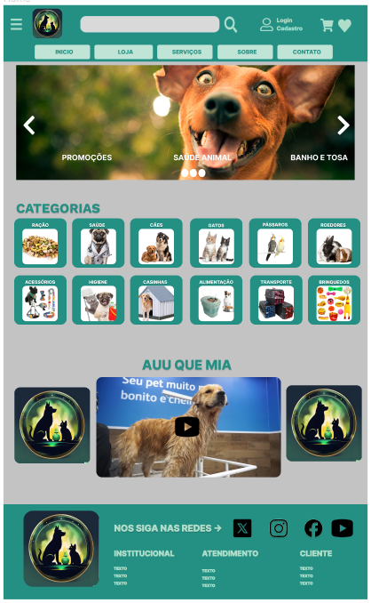
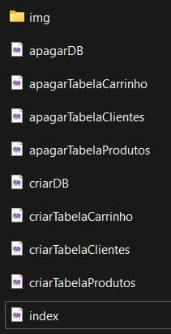
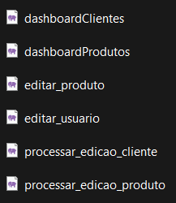

Layout e Design
Iniciamos a criação básica do layout do site, definindo quais elementos seriam apresentados nas páginas
principais. Posteriormente usamos o Figma para por em prática as ideias de Lyout e Desing. Fizemos um
projeto de Alta Complexidade contendo 3 páginas: Principal, Loja e Contato.
Página Principal

Na página principal inserimos (na ordem de cima para baixo):
- O “Header”;
- Um Carousel;
- Uma janela de vídeo;
- Painel de “Cards”;
- O “Footer”.
O “Header” possui um “Menu Hamburguer”, Logo da Loja, uma barra de pesquisa, um atalho para “Login” e
“Cadastro” e um atalho para o carrinho de compras, todos no mesmo alinhamento. Abaixo temos atalhos (botões)
para as principais páginas do site ( Ínicio, Loja, Serviços, Sobre e Contato).
O “Caroussel” é de transição simples através dos botões nas extremidades. Ele é constituído por 3 imagens que
destacam pontos de intersse que a loja pode oferecer ao cliente, e por isso deve chamar a atenção. Ocupa
toda a largura da página e tem cerca de 600px de altura.
O Painel de CATEGORIAS, é constituído por 12 ”Cards” dividido em duas linhas. Ele apresenta todas as
categorias oferecidas pela loja, sendo tipos de animais ou produtos. Cada “Card” possui uma legenda e imagem
correspondente e serve de link para uma outra página.

A janela de vídeo Possui o Nome da marca em destaque “AUU QUE MIA”, uma janela de vídeo central mostrando
Tudo que a loja oferece, como produtos e serviços. De cada lado temos a Logo da loja em Destaque!

O “Footer” possui a Logo em destaque à esquerda. Um texto com indicação das Redes Sociais e seus respectivos
Ícones que servem de links para cada uma delas (X, Instagram, Facebook e YouTube).
Abaixo dividido em3 colunas há informações importantes sobre a empresa (Institucional, Atendimento,
Cliente).
Loja
Na página Loja inserimos (na ordem de cima para baixo):
- O “Header”;
- Painel de Filtros;
- Painel de “Cards”;
- O “Footer”.

O Painel de Filtros fica disposto verticalmente do lado esquerdo da página. É dividida em 3 partes (Animais,
Seção e Higiene) e cada uma dela tem mais 3 sub categorias.
O Painel de Filtros fica disposto verticalmente do lado esquerdo da página. É dividida em 3 partes (Animais,
Seção e Higiene) e cada uma dela tem mais 3 sub categorias.
Contato
Na página Contato inserimos (na ordem de cima para baixo):
- O “Header”;
- Painel Horário de Atendimento, Mapa e Endereço;
- Canal de comunicação e Redes Sociais”;
- Informações do Aplicativo da Loja;
- O “Footer”.

O Painel de Contato é dividido em 3 partes dispostos em coluna (Horário de Atendimento, Mapa com link para
Google Maps e Endereço.
O Painel Fale Connosco de é dividido em 2 partes dispostos em linhas. A primeira tem 3 botões para os canais
de Atendimento (WhatsApp, Chat, E-mail). A segunda tem 4 ícones das Redes Sociais.
O Painel de App, Possui uma Imagem que mostra o App no Celular, Um QR Code para fazer o Download do App (App
Store e Google Play) e ao lado Informações sobre o App.
COMPARAÇÃO DO FIGMA COM O PROJETO FINAL
Pagina Inicial
Modificações:
No “Header”, os botões ganharam um design mais simples inicialmente, e ganha movimento quando o mouse é
passado.
As Imagens do Carousel foram inseridas.
Foi retirado o Painel de Vídeo.
No “Footer” foi rertirado os ícones de redes sociais e minimizada as informações.
Loja:
Modificações:
No “Header”, os botões ganharam um design mais simples inicialmente, e ganha movimento quando o mouse é
passado.
A Disposição dos Cards foi mudada para 2 Linhas e 4 Colunas. E as Imagens e Informações dos produtos foram
inseridas.
No “Footer” foi rertirado os ícones de redes sociais e minimizada as informações.
Contato:
Modificações:
No “Header”, os botões ganharam um design mais simples inicialmente, e ganha movimento quando o mouse é
passado.
A Disposição dos Cards foi mudada para 2 Linhas e 4 Colunas. E as Imagens e Informações dos produtos foram
inseridas.
No “Footer” foi rertirado os ícones de redes sociais e minimizada as informações.
Código do Projeto
Todas as páginas foram feitas em sua maioria apenas com códigos html, Css e JS (PHP para DB). Optamos por não
utilizar Bootstrap como ferramenta. Todos os efeitos visuais foram feitos por códigos. Dividimos o projeto
em pastas (img, js, php, styles).
Páginas (HTML)
A Base dos códigos são “div” e “classes”. Assim conseguimos posicionar, estilizar e formatar da maneira que
for necessária. Seja através de Css ou Js.
Páginas (CSS)
Temos um Css para cada página e um “root” para ser utilizado de base para todas. O CSS foi usado também para
dar efeitos ao passar o Mouse por exemplo.
Páginas (JavaScript)
O JS foi usado em poucas páginas, como carrinho e login.
Desenvolvimento do Back End
Para o Back End, optamos por utilizar a linguagem PHP no processo de desenvolvimento.
Implementamos um banco de dados utilizando o Xampp para armazenar todos os dados relacionados a clientes,
carrinho e
produtos.
Criação de Banco de Dados
Optamos por aprimorar a eficiência na execução de testes em nossa máquina por meio da automação do processo
de criação de bancos de dados. Desenvolvemos uma página que oferece botões dedicados tanto à criação quanto
à exclusão de bancos de dados e tabelas. Adicionalmente, o arquivo proporciona uma visão abrangente das
tabelas já existentes no banco de dados.
Essa abordagem tem acelerado significativamente as alterações no banco de dados, tornando-se uma prática
conveniente. Agora, basta realizar as mudanças no código da página e executar a criação com apenas um
clique, ao invés de digitar manualmente todos os comandos a cada necessidade.


Dashboars
Foram desenvolvidas páginas destinadas à visualização e gestão dos cadastros no banco de dados, exibindo
de forma abrangente todos os registros de clientes e produtos. Além disso, é possível realizar edições
em todos os campos cadastrados diretamente na mesma interface, proporcionando uma gestão eficiente. A
funcionalidade de exclusão de cadastros também está disponível na dashboard, oferecendo uma abordagem
abrangente para o gerenciamento dos dados. Essas melhorias visam facilitar e otimizar o processo de
administração do banco de dados, tornando-o mais acessível e prático.
